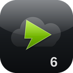
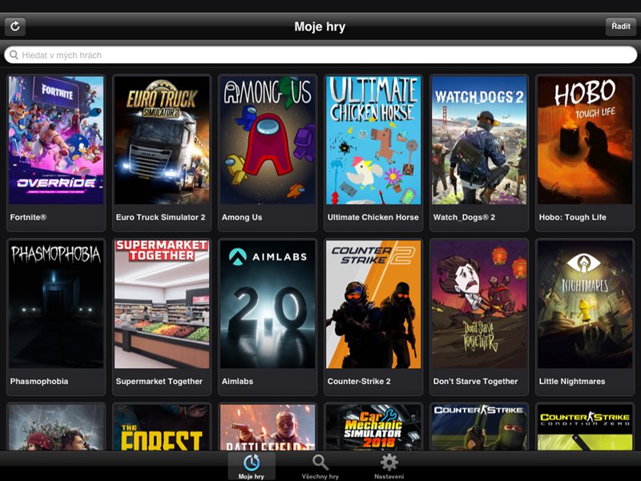
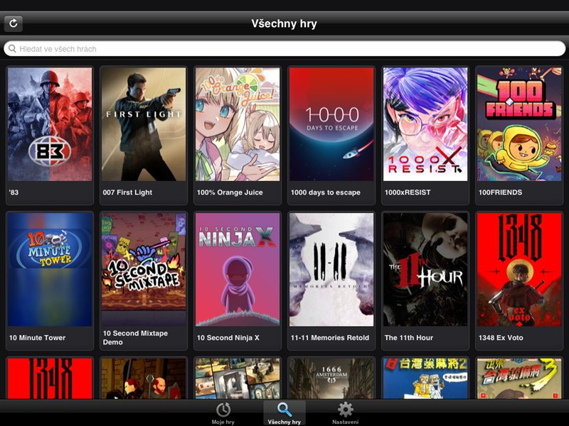
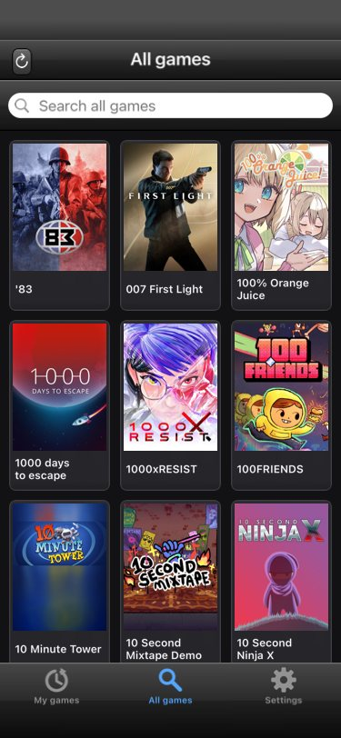
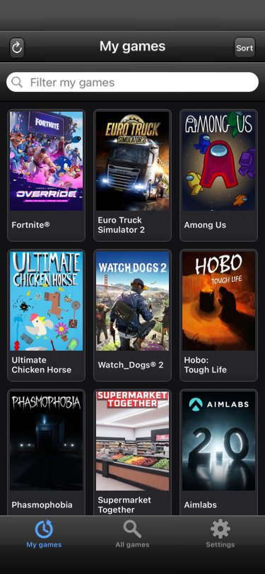

GeForce NOW: stream your PC games to a 2012 iPad
An unofficial GeForce NOW client. It signs in to your NVIDIA account, shows your library, waits in NVIDIA's queue and streams the game over a WebRTC connection built from scratch for a 2012 device: hardware H.264 decoding, Opus audio, a touch gamepad, mouse mode and the keyboard.




Unofficial apps by samcejko, not affiliated with or endorsed by Twitch, Google, Apple, TikTok, Instagram, Meta, Spotify, Kick, NVIDIA, Mojang, Microsoft, OpenRouter, Vine, X, diVine or the Moonlight, Sunshine and Apollo projects.